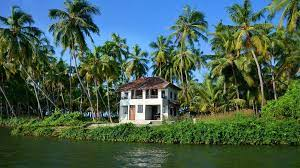

Kavvayi Beach, Kerala
The backwaters are fed by four rivers and streams - the Kavvayi,
Kankol, Vannathichal, Kuppithodu and Kuniyan rivers. The largest
island of the island group is Valiyaparamba, and the backwaters near
it are also known by the same name.
The Payyannur municipality, in an attempt to draw in more tourists,
organises kayaking events and has developed a park near the ferry at Kavvayi,
serving as a breathtaking view of the entire backwaters. Visitors can sit and
watch the boats go by, and also avail boating facilities
